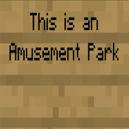
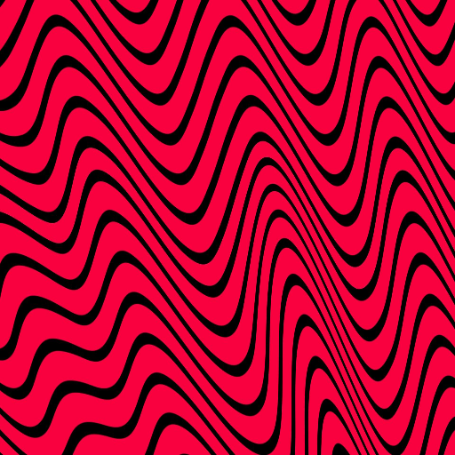

This project is a WebGL project that utilizes mutliple Cones and Spheres to create the appearance of a Merry Go Round from an Amusement Park. I create a single point that I use as the centre of the Merry Go Round (Currently set on -0.5 at the Z axis) and then generate a top and bottom Cone above and below it (bottom one is flattened). Then I generate 4 cones that revolve around it in circular fashion around its center (rotating about a translated Y-axis of rotation) using a composite matrix in the Vertex Shader. I also have each cones own individual calculations (rotations, translations and scaling) done in the render function which creates Cones and then does the necessary transformations. I also have a bunch of User Inputs configured for moving around the camera and even a Help, Restart and Quit button installed. Then for the lighting: I have expanded on the Amusement park by adding two mid cones in the center of the Merry Go Round that emits yellow light as well as a sphere on top that emits white light. There is ambient light over the entire Merry Go Round, and specular (in one cone) and diffused light that originates from my midcones and sphere. They are unaffected by the ambient light too. To achieve all of this, I had to add normals as an attribute to my primitive function javascript files for building the buffers, and calculated the normals for both Cones and spheres which I use for the lighting calculations! Next, both Gouraud and Phong shading options are implemented and may be switched between using buttons provided below as well as whether you want the cone or sphere as the light source. Finally, Texture Mapping has been introduced in the form of the Minecraft Sign that displays "This is an amusement Park" as well as the pewdiepie background!
'Press H for Help':

